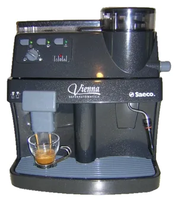
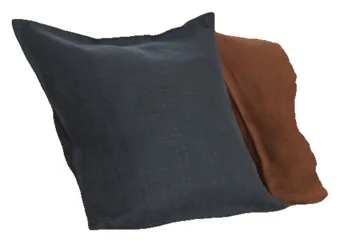
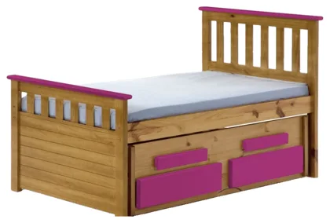
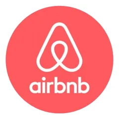
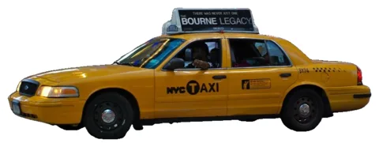
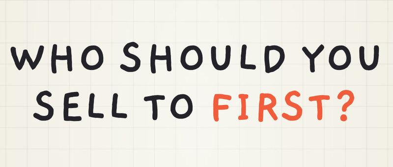

Serve the dissatisfied minority first
You've built a great product. Who do you sell to first? Not the average user. The outlier.
Tap one.
The aunty and the friend are on your side. Neither one is your first customer. The one who pays is.
A chapter in The Book of Clarity by Paras Chopra, who co-founded Wingify, takes that one step further. It's called "Serve the dissatisfied minority first", and I'm reading the book one idea a day.
Never serve the average user first
Serve the one who is the most dissatisfied minority first. The outlier. The book draws it as a big circle with a small triangle cut out of it. Tap to see who is in which.
There were always hotels and cabs
So do you know why Airbnb came? Take a traveller who just wants to sleep for a night, safely. Not a fancy hotel lobby, or two kinds of pillow. That's where Airbnb came in. In the book, its first guests were conference visitors in a city where every hotel was booked.




Same with Uber
Cabs and taxi drivers were always there too. Uber launched with Uber Black first: the people who didn't want to plan ahead of time. One tap, and the car is at your doorstep.

That's where you solve it
The mainstream is always happy. The extreme user is the one who is always in burning pain. That's where you solve it.
As a beginner, don't build for the mainstream. The mainstream will always follow the extremist, because it's better, cheaper and faster.
That's what happened with Airbnb too, the book says: more and more people now like staying in cosy homes, not hotels.
Dissatisfaction is where the profit follows
The average user is easy to find and easy to please, and every solid product already does. The person in pain is the one who'll switch.
Do this today
List the people who could use your product. Next to each name, write how badly they need it today. Start with the one in the most pain, even if that's a small group.
Next: why products can't create desires
One idea a day, on camera

▶ Watch the reel on InstagramWe met Paras at Lossfunk, where he spends his time now. I'm opening his book one idea at a time, one short video each, and writing up what I learn. This one is also a YouTube Short.
I build Ayu, a health records app for Indian families. Who is the user in the most pain? That's the question I'm taking from this chapter.
- 8 OctWhy do most startups fail?
- 9 OctWhen should you start a startup?
- 10 OctWhy do businesses exist?
- 12 OctNever believe your customers
- 13 OctNo market is ever done
- 14 OctServe the dissatisfied minority first
Watch it as a reel on Instagram. Follow along on Instagram, @om_cosmos